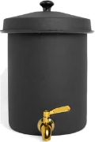
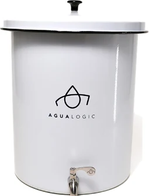
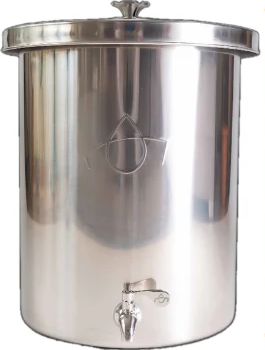
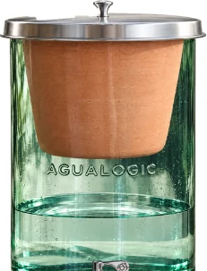

Guía del purificador · 04
Elige el tamaño
para tu hogar
Medidas reales, a la misma escala
Mini peltre
5,5 L · 3,4 kg

22 cm
18 cm
Peltre
20 L · 7 kg

42 cm
32,5 cm
Acero inox
20 L · 6,5 kg

46 cm
31 cm
Vidrio
20 L · ≈14 kg

45 cm
34,5 cm
Antes de decidir, mide tu mesón: necesitas el diámetro de la base y el alto libre del modelo (hasta 46 cm) para llenarlo y servir.
El vidrio es soplado a mano: cada pieza es única y pide más cuidado. No lo pongas boca abajo ni uses agua caliente.
Medidas aproximadas según las fichas de AguaLogic (alto y diámetro). Incluyen tapa. Todos incluyen cerámica y grifo de acero inoxidable. La escala de las fotos es aproximada.
Pureza Natural · Distribuidor autorizado AguaLogic